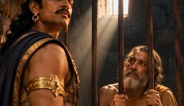

भारत के
अनसुने सच
इतिहास•सम्राट•साज़िशें
True stories from Indian history that most of us never heard in school. Kings, wars, festivals and old mysteries, told in everyday Hindi, with the sources named.


Full videos
Documentaries
The whole story in one sitting. Where the old books disagree, you hear both sides.


Series
Stories told part by part
A big story comes out one short part each evening. After the last part, the whole thing comes out as one full video.
Ashoka
The unwanted prince, the fight for the throne, Kalinga, and the emperor who had his regret carved in stone.
Diwali, 5 days
Dhanteras, Choti Diwali, Lakshmi Puja, Govardhan and Bhai Dooj. One old story for each day.

Ajatashatru
The prince of Magadha who locked up his own father, Bimbisara, and later went to the Buddha.
New part every evening, 7 PMComing next
New this week
What goes live next on YouTube, Instagram and Facebook.
झांसी की रानी
गुरु नानक और बाबर
Festival and special-day topics are planned and may change.
Shorts
One story in a minute
The newest ones. Every Short, and the most watched, are on the Shorts page.


पिता को कैद करने वाला अजातशत्रु, बौद्ध ग्रंथों के मुताबिक, 6 गुरुओं से मिलने के बाद बुद्ध के पास पहुँचा और…

जैन ग्रंथों में अजातशत्रु की 8 पत्नियाँ हैं, बौद्ध ग्रंथों में 500। माँ कौन थी, जंग क्यों हुई और महावीर-बुद्ध…

जैन ग्रंथों के मुताबिक अजातशत्रु ने वैशाली से जंग एक हाथी और एक दिव्य हार के लिए लड़ी थी। पढ़िए सेचनक हाथी,…

राजा बिम्बिसार ने जिस बेटे की घायल उंगली खुद चूसी, उसी बेटे ने उन्हें कैद करके मगध छीन लिया। अजातशत्रु के…
Blog
Read the full stories
The longer version of each video, with dates, sources and the questions people ask.

पिता को कैद करने वाला राजा बुद्ध के आगे क्यों झुका?
मगध के बागी बेटे अजातशत्रु की कहानी। पिता बिम्बिसार की कैद, वैशाली का युद्ध, जैन और बौद्ध ग्रंथों के दो अलग रूप और बुद्ध के सामने पछतावा।

चंडाशोक या धम्मशोक, सम्राट अशोक का अनसुना सच
कलिंग में 1,00,000 मौतें, 99 भाइयों की कथा और 84,000 स्तूप। सम्राट अशोक के इतिहास में किंवदंती कहाँ खत्म होती है और सच कहाँ से शुरू होता है, पढ़िए।

दिवाली के 5 दिन, 5 कहानियाँ
दिवाली पूरे 5 दिन चलती है। धनतेरस से भाई दूज तक हर दिन की अपनी कहानी है, जिसमें यमराज, कृष्ण, महावीर और टैगोर तक आते हैं।

जब औरंगज़ेब ने दीवाली पर रोक लगाई, दीपावली का पूरा इतिहास
दीपावली के नाम का अर्थ, इसकी शुरुआत, औरंगज़ेब की लगाई रोक, और जैन, सिख व बंगाली परंपराओं में इसके अलग रंग, सब एक जगह।

धरती आबा बिरसा मुंडा का उलगुलान, जिससे डरे अंग्रेज़
बिरसा मुंडा ने महारानी का राज खत्म करने का नारा दिया और किसानों से लगान न देने को कहा। पढ़िए धरती आबा और उलगुलान की पूरी कहानी।

चंद्रगुप्त मौर्य, जिनका जन्म और अंत दोनों रहस्य हैं
मौर्य साम्राज्य के संस्थापक चंद्रगुप्त मौर्य का जन्म, चाणक्य से मुलाकात, नंदों पर जीत और उनका रहस्यमय अंत। सच और किंवदंती को अलग रखकर पूरी कहानी।
Why Gyaanoxa
History the way it was told at home
Most of us learned history as a list of dates. Gyaanoxa tells the stories behind them: the prince who locked up his own father, the emperor who carved his regret in stone, the festival that lasts five days for a reason. Every story stays close to its sources, in simple Hindi, one story at a time.
More about GyaanoxaSources named
History books, inscriptions and encyclopaedias. Legends are marked as legends.
Both sides
When two old texts disagree, you hear both versions and decide.
Watch or read
A one minute Short, a full video, and a long article for every story.
Every evening
A new Short at 7 PM IST on YouTube, Instagram and Facebook.
Explore
Where to start
Every part of Gyaanoxa has its own page.